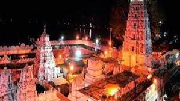
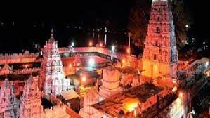

History OF Temple..
The presiding deity of the temple is Sri Raja Rajeshwara Swamy who is locally known as Rajanna and is adorned by the idol of Raja Rajeshwari Devi on the right side and the idol of Laxmi Sahitha Siddi Vinayaka on the left. Within the temple premises numerous shrines known as upalayas are dedicated to different deities, including Ananta Padmanabha Swamy, Rama accompanied by Seetha and Laxmana, Anjaneya Swamy, and others. Each of these deities has a separate shrine within the temple. Vemulawada Raja Rajeshwara temple is situated 38 km from Karimnagar and draws pilgrims who bathe in a tank called Dharma Gundam, before proceeding for darshan; these waters are believed to be holy and have medicinal properties. Every year at the time of Maha Shivaratri, devotees go to Vemulawada, to offer prayers to Shiva. This temple also has an offering made by devotees called' Kode Mokku', a ritual where the devotee makes the pradakshinam of the temple with a kode (bull) which is vahanam (Nandi) of Lord Shiva. Inside is a massive Shiva Lingam.